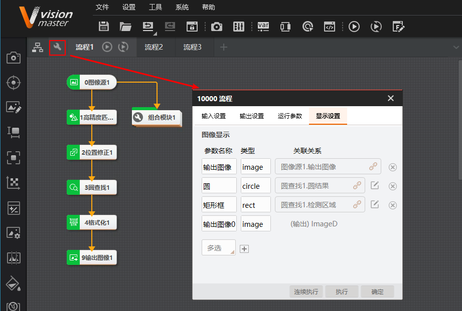

首页
发版说明
软件许可
运行环境
版本切换和升级
编程引导
接口函数
示例程序介绍
状态码
工具
常见问题
法律声明
渲染结果：通过绑定流程或模块获取渲染结果的方法
问题描述
环境：
VM4.x + VS2013及以上
问题：
如何通过绑定流程或模块获取渲染结果？
解决方法
渲染结果的显示可通过渲染控件绑定流程或模块的方式实现。推荐使用绑定流程的方式，更符合高内聚低耦合的思想，绑定流程可以实现单个渲染控件绑定多个算法模块渲染结果。
通过绑定流程显示渲染结果，一个渲染控件只能同时绑定一个流程。如需绑定多个流程，需要分时绑定或使用多个渲染控件。
完成流程配置中的显示设置，如下图所示。

通过如下代码绑定流程。
VmProcedure VmProcess = (VmProcedure)VmSolution.Instance[
"流程1"
];
//实例化流程1
vmRenderControl.ModuleSource=VmProcess;
通过绑定模块显示渲染结果，只能渲染某个模块的渲染结果。
IMVSCircleFindModuCs
.
IMVSCircleFindModuTool
circleTool=(
IMVSCircleFindModuCs
.
IMVSCircleFindModuTool
)VmSolution.Instance[
"流程1.圆查找1"
];
vmRenderControl.ModuleSource= circleTool;